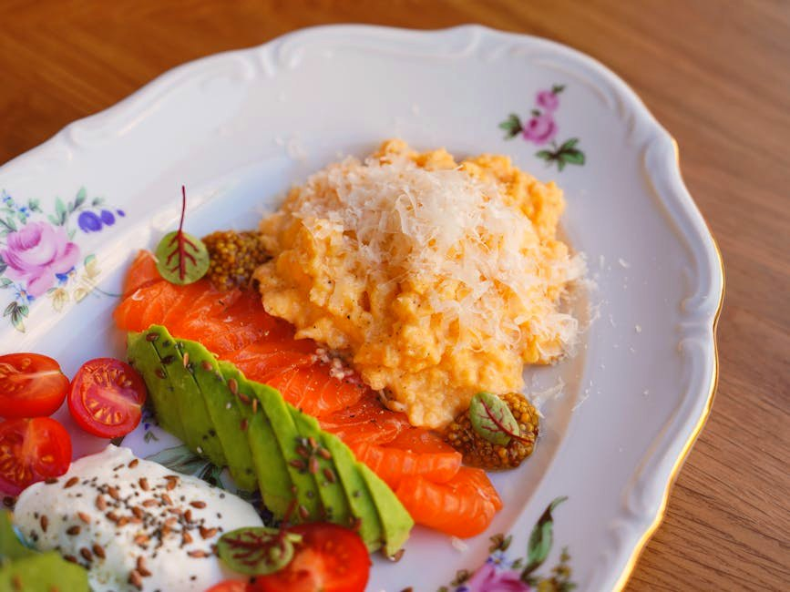

Cottage-Scrambled Eggs with Smoked Salmon

Cottage-Scrambled Eggs with Smoked Salmon delivers 70 g of protein for just 4 g net carbs — ready in about 12 minutes. It keeps net carbs low and added sugar near zero, so your energy stays steady.
Ingredients
- 3 Large eggs
- 100 g Liquid egg whites
- 150 g Low-fat cottage cheese
- 120 g Smoked salmon
- 1 tsp Butter, chives & pepper
Equipment
- non-stick skillet
Method
- Whisk the eggs and egg whites; scramble gently in butter over low heat.
- When almost set, stir through the cottage cheese for an extra-creamy curd.
- Top with the smoked salmon, chives and black pepper.
Storage & make-ahead
Fridge: keeps 3–4 days in an airtight container — reheat gently. Most portions freeze well for up to 2 months; thaw overnight.
Tip
Folding cottage cheese into scrambled eggs is a classic protein hack — creamy and rich without cream.
Dietary swaps
Dairy-free: Low-fat cottage cheese → dairy-free cottage cheese or blended silken tofu; Butter, chives & pepper → olive oil or vegan butter (for lactose intolerance or a dairy-free diet)
Full nutrition (estimated, per serving): 530 kcal · 70 g protein · 4 g net carbs · 26 g fat (10 g sat) · 1 g fiber · 5 g sugar · 1730 mg sodium. Allergens: Milk, Egg, Fish. Macros are realistic estimates from standard food-composition values; brands and portions vary.
Get the full cookbook (PDF) — 100 recipes, 3 meal plans & the science →